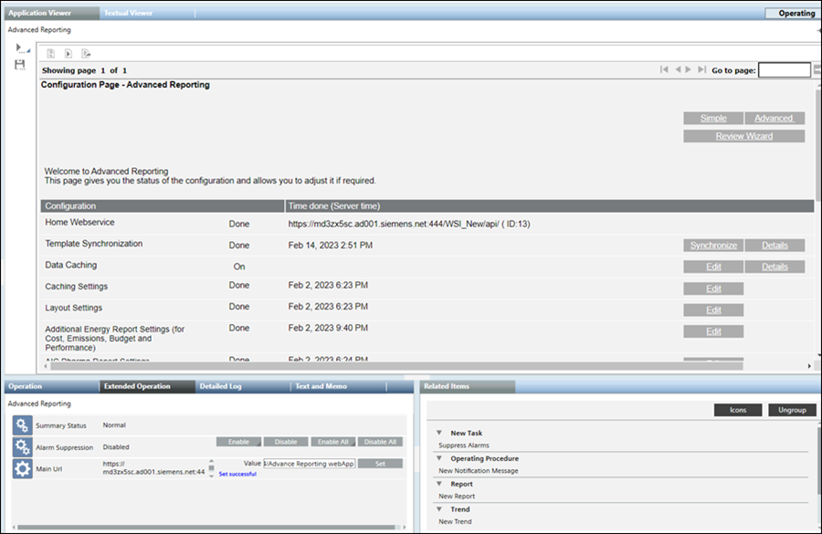

Configuration Page - Advanced Reporting
The Configuration Page - Advanced Reporting displays the configuration status of advanced reporting on your system. It also provides options to further optimize the configuration settings.
This page displays the configuration according to the Simple or Advanced configurations. You can select the Simple or Advanced configurations by clicking Simple or Advanced on the page.
Review Wizard displays the configuration that you specified through the wizard when configuring advanced reporting.

- The Simple configuration is applicable when you have installed only the Advanced Reporting extension and need to perform the basic configurations such as configuring the URL of the Home webservice and synchronize advanced reporting templates.
Simple Configuration | |
Name | Description |
Home Webservice | URL of the management station web services that updates the WSI URL in all the report templates provided by the management station. |
Details | Displays the details of the Web Services URL along with options Add, Delete and Hide the URL. |
Template Synchronization | Date and time when the report templates were transferred to the Tomcat server. |
Synchronize | Deploys the report templates from the library to the Tomcat server. |
- The Advanced configuration is applicable when want to work with creating reports related to caching, consumption, and so on for which you need additional configurations such as caching settings, layout settings, settings for configuring the look and feel of the report elements, and so on. For more information, see Energy Reporting and Pharma Reporting extension help.
- The Review Wizard configuration is applicable when you want to view the existing configurations specified on Configure WSI and Synch Libraries page, and view or edit the configurations specified on Layout Settings and Cache Settings page.